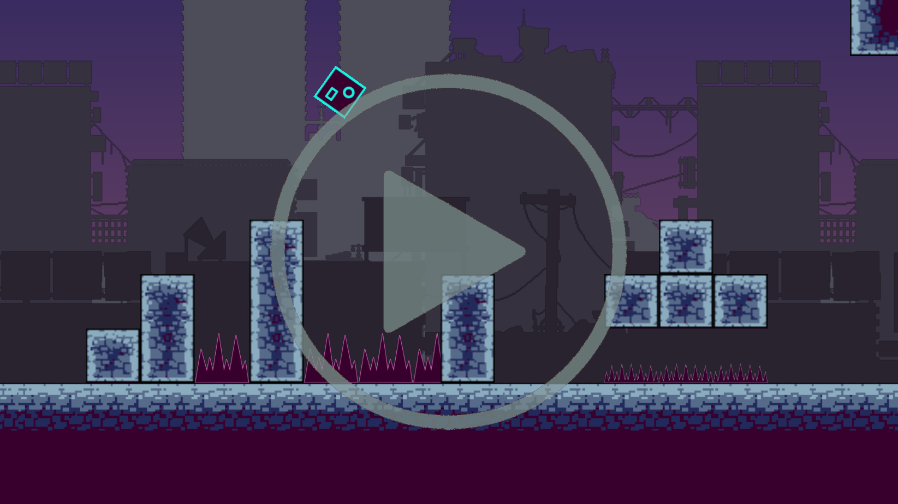
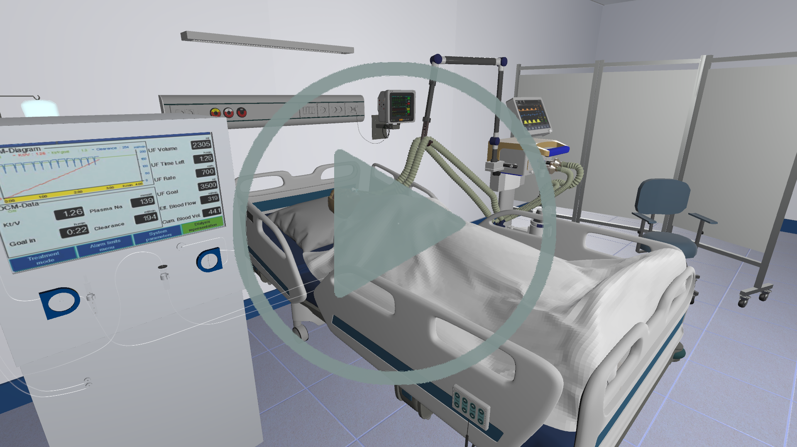
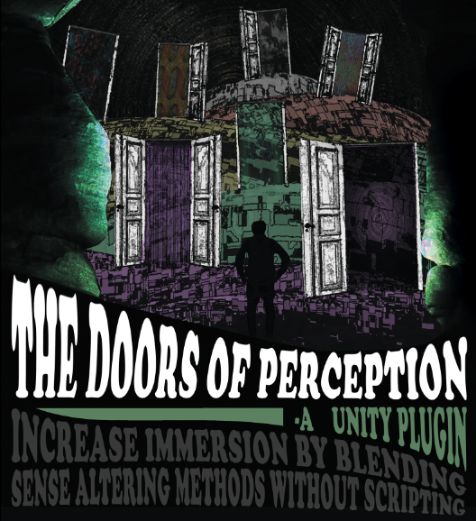
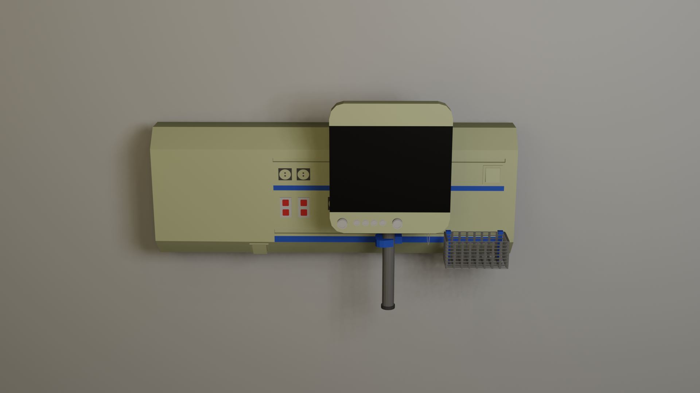
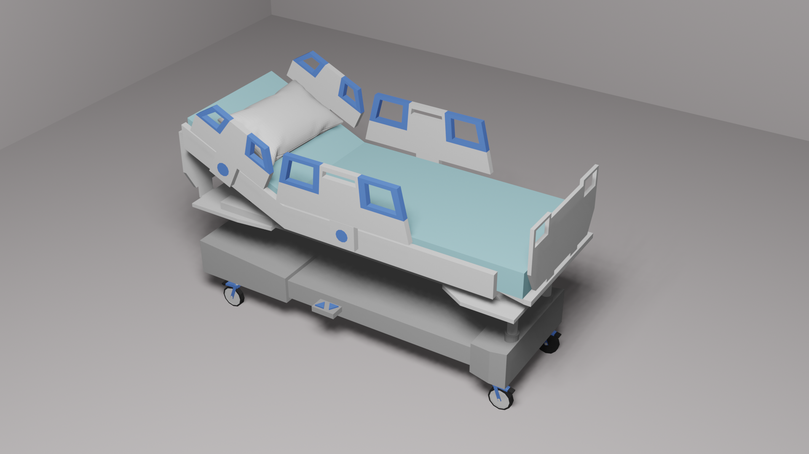
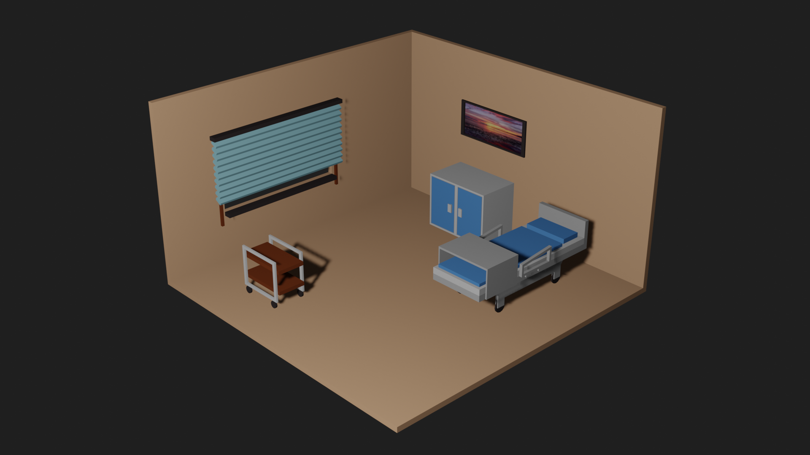

A passionate developer who loves creating beautiful, intuitive, and modern virtual experiences.
View My Work
Always fascinated by the logic and complexity of games and virtual worlds, I completed a Bachelor's degree in
Games Engineering.
I spent several years gaining hands-on experience — about two years developing interactive
3D web visualizations with Angular, and over three years creating game-like VR simulations in Unity for
psychological
research.
I handled 2D/3D asset creation and integration, collaborated with researchers and
developers, and even trained colleagues along the way. I’ve also gained deep experience with multiple game
engines, frameworks, and programming languages — all the way up to developing my own C++/OpenGL game and engine
from scratch.
I love diving into new projects and turning ideas into meaningful, engaging experiences for players. I’m excited
to
find a team where I can put my skills and motivation to work, grow as a developer, and help create something truly
special.






Connect with me on LinkedIn for more detailed information.